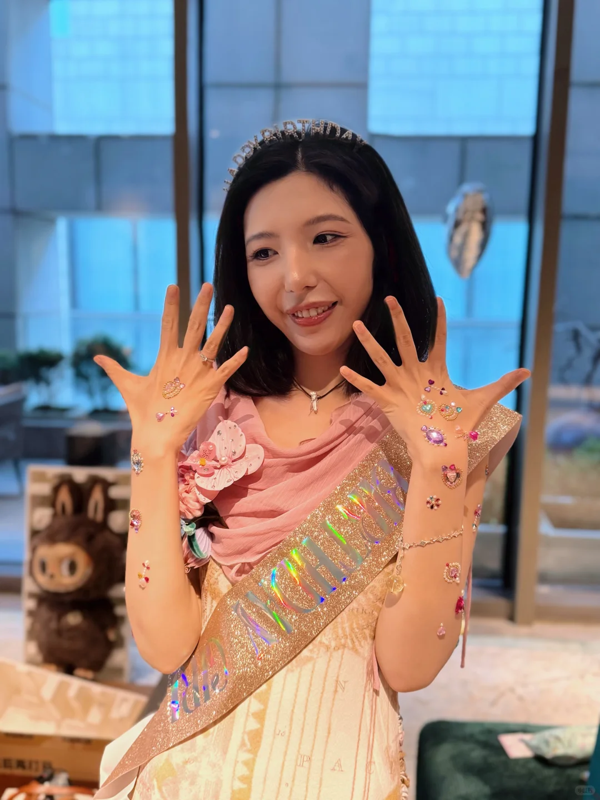
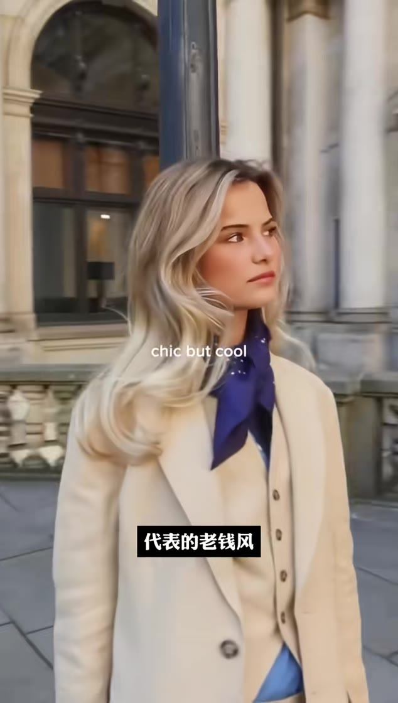
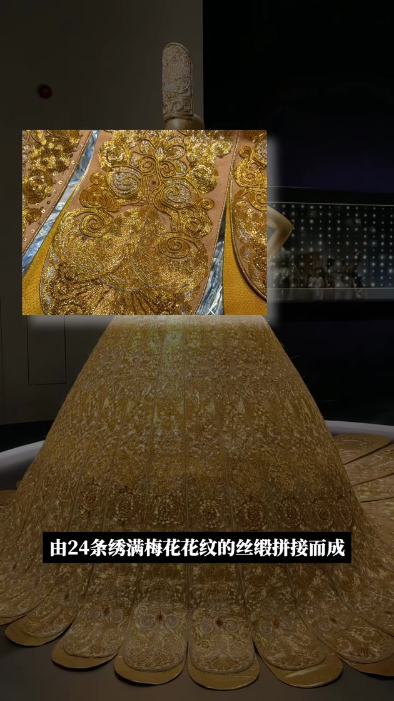
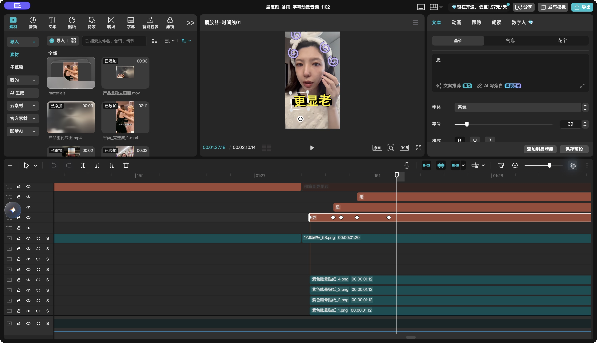
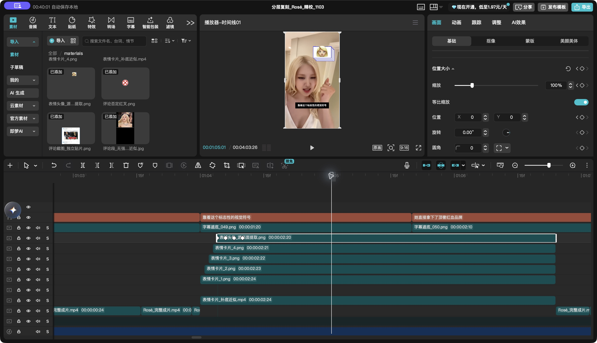
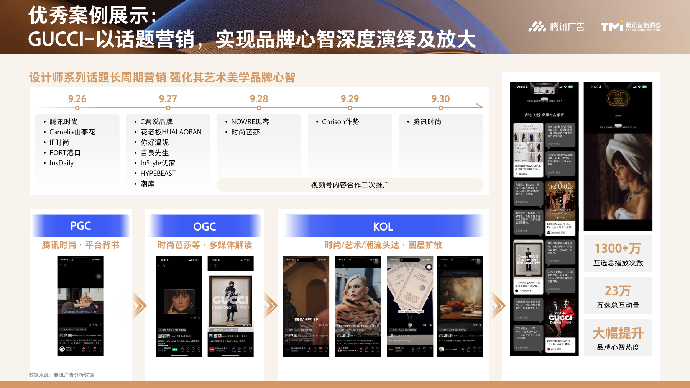
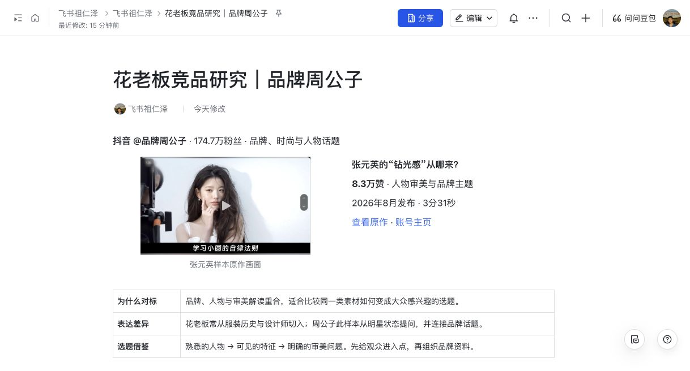

01 / 服装与趋势
一件外套，怎样重新流行。
盘扣、肩线与整体廓形，让“拿破仑外套”有可辨认的视觉特征；舞台造型与日常穿搭呈现同一件服装的不同场景。

把时尚，
讲成故事。
花老板衣着之上，故事之中。
2025.03 — 2026.10.20

PROFILE / 人物档案
36岁 · 时尚内容创作者
传统媒体出身，曾任《新京报》商业记者、PingWest 品玩主笔，并为36氪撰稿。围绕时尚服装、人物故事与品牌文化进行内容创作。
—
本人负责选题、写稿、拍摄和剪辑全流程，围绕人物故事、时尚服装与品牌表达推进内容。下面以梅根福克斯作品展示已确认的具体分工。
看我的代表作 ↗找到人物故事的切入问题。
组织材料，形成叙事与表达。
拍摄花老板的出镜口播。
连接口播、人物素材与字幕。
MEGAN FOX / 人物叙事
从形象变化的悬念，
走到对人物处境的理解。
人物影视与历史画面另行搜集；实拍部分为花老板口播。
负责选题。成片以人物形象的变化切入，用一个观众能感知的问题建立好奇，再把叙事引向人物经历。
作品公开累计读数
采集于 2026.11.01

放大查看 ↗
放大查看 ↗正在读取文稿对照…
从成片里的两个例子，
看画面怎样接住文字。
盘扣、肩线与整体廓形，让“拿破仑外套”有可辨认的视觉特征；舞台造型与日常穿搭呈现同一件服装的不同场景。
礼服纹样的近景对应装饰细节，织机与工坊画面对应制作过程。工艺介绍有具体画面支撑，不停留在“高级、好看”的形容。
INDUSTRY REFERENCE / 行业收录
花老板以人物与品牌故事解读时尚，与 GUCCI 围绕设计师系列展开的话题传播相契合。把设计师理念讲成观众听得懂的故事，让时尚内容连接品牌与兴趣人群；腾讯白皮书在这一优秀案例中列出“花老板HUALAOBAN”，记录了这次内容合作。
腾讯广告 × 腾讯营销洞察 · 2026版 · 第82页
放大查看白皮书原页 ↗
竞品研究 / 飞书底稿
花老板 × 品牌周公子
账号信息、代表作品与选题借鉴。

账号数据加载中…
受众画像加载中…
商业数据加载中…
先提出一个观众关心的问题，
再让具体的产品细节回应它。
谷雨：借熟悉人物引出好奇，再衔接产品与使用场景。